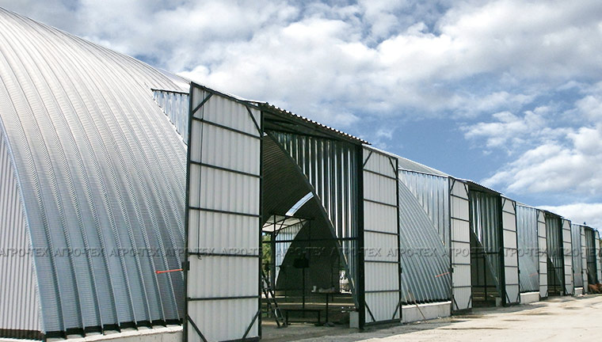
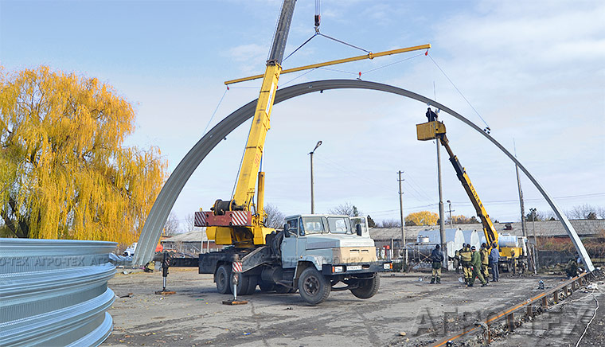
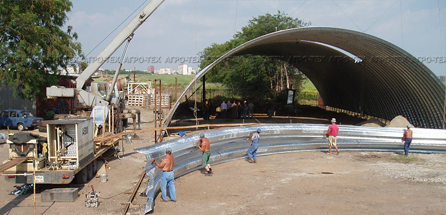
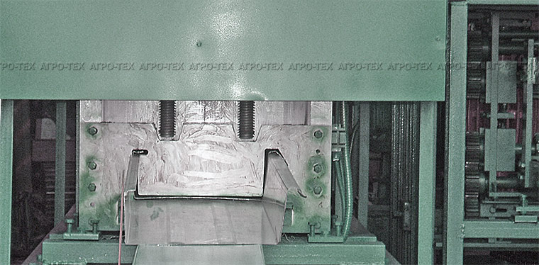
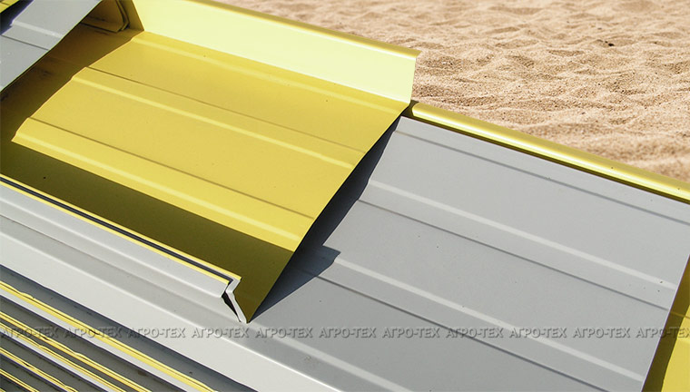
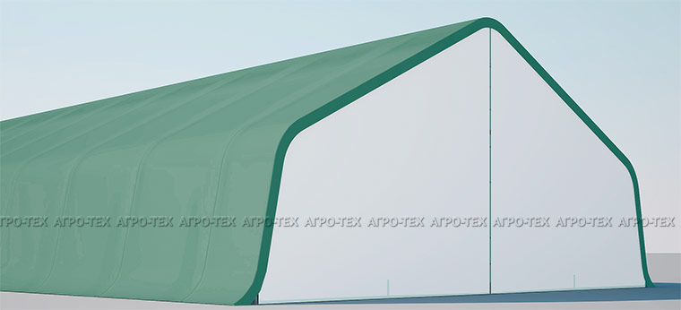

-
Ангары
- Безкаркасные ангары
- Каркасно-тентовые ангары
- Безкаркасные навесы
- Каркасно-тентовые навесы
-
Селхозтехника
- Опрыскиватели
- Разбрасыватели
- Бороны
- Вода, ЖКУ, КАС
- Прочая техника
- Запасные части
- Распродажа
- Услуги
Строительство ангаров
ООО "Агро-Тех" имеет большой опыт проектирования и строительства быстровозводимых металлических сооружений. Ежегодно компания строит и сдает в эксплуатацию десятки тысяч квадратных метров бескаркасных арочных конструкций.
Строительство быстровозводимых бескаркасных арочных сооружений:
- зернохранилища (зернотоки);
- овощехранилища (хранилища для лука, картофелехранилища);
- ангары для скота и птицы (свинарники, телятники, овчарни, птичники);
- авиационные ангары (типовые и по индивидуальному проекту);
- производственные помещения, гаражи, навесы (укрытия для сельхозтехники, сенохранилища);
- торговые и выставочные павильоны, офисные помещения
- ангары для социальной сферы, в том числе - спортзалы, крытые бассейны и прочие объекты;
- иные конструкции бытового и производственного назначения
Зернохранилище
От 12 до 28 метров. Идеальная по форме конструкция для хранения зерновых культур.
Арочные ангары получили широкое распространение в более чем 60 странах мира. Их популярность во многом определяется высоким спросом на недорогие производственные и складские площади.
Технология позволяет в сжатые сроки и с минимальным бюджетом построить ангар под потребности конкретного заказчика в удобном для него месте.
Строительство металлического арочного ангара связано с его сооружением из профиля оцинкованной рулонной листовой стали, выполняющего роль несущей конструкции.
Технология возведения ангаров арочного типа обладает рядом существенных преимуществ, связанных как непосредственно с самим строительством, так и с последующей эксплуатацией данных сооружений. Это и сравнительно небольшой вес несущей конструкции, и скорость, и высокий уровень технологичности монтажа на любом грунте, отсутствие работ "мокрого" строительства, практичность, долговечность, привлекательный внешний вид строений.
Арочные ангарыВозведение бескаркасного арочного ангара осуществляется в несколько этапов:
- разметка - определение положения предполагаемого сооружения, бурение отверстий под трубы, завоз металла, бетонирование;
- "ноль" - подготовка строительной площадки к возведению ангара;
- изготовление либо доставка необходимого профиля и установка купола в виде арки;
- установка торцевых стенок, ворот, врезка окон и, в случае необходимости, боковых тамбуров;
- установка опалубки, заливка бетоном, демонтаж опалубки, наружная гидроизоляция;
- утепление ангара (по желанию клиента).
Ни для кого не секрет, что каждый заказчик стремится получить надежное и качественное помещение, не прибегая к значительным финансовым затратам.
В этой связи все большую популярность приобретают быстровозводимые ангары из ЛМК (легких металлоконструкций).

В сегменте плодоовощных и зерновых хранилищ, а также различных промышленных складов серьезно конкурируют каркасные (с применением металлического каркаса) и бескаркасные (арочного типа) сооружения.
Каркасные, бескаркасные ангарыСтроительство арочного ангара возможно практически на любом грунте. Относительно небольшой вес конструкции позволяет обходиться без фундамента глубокого заложения.
Темпы строительства бескаркасных арочных сооружений беспрецедентно высокие. Например, конструкция ангара площадью 1000 кв. м. возводится за пять рабочих дней. А полный цикл (от "нуля" до сдачи "под ключ") осуществляется бригадой строителей численностью 10-12 человек за 20-25 дней.
Профилирование листа происходит на высокотехнологичном оборудовании американского производства (MIC Industries), а также на высокопроизводительных машинах серии МБС "Радуга". Этот комплекс представляет собой мини-заводы, начинающие свою работу непосредственно по прибытии к месту монтажа.
Прокатывая рулонную оцинкованную сталь толщиной от 0,7 мм до 1,4 мм данные машины формируют самонесущие гофрированные панели (на данном этапе происходит гибка металла). Преимуществом используемого оборудования является возможность "плавного" регулирования радиуса арки, что позволяет варьировать ширину сооружения от 12 до 28 метров.
При помощи забортовочной машины изготовленные детали сшиваются между собой прочным водонепроницаемым швом. Такой способ делает конструкцию ангара практически монолитным и полностью герметичным. Арочные секции с помощью автокрана устанавливаются в вертикальной плоскости, соединяясь между собой также с помощью забортовочной машины. По мере необходимости применяется различная строительная техника универсального типа.
Арочные панели могут использоваться для строительства быстровозводимого сооружения в целом, либо для арочной кровли, имеющей в основании боковые стенки.
Оригинальный способ крепления арок придает особую прочность конструкции и отвечает всем требованиям безопасности при стихийном внешнем воздействии - ветровом, снеговом, сейсмическом.
При строительстве бескаркасного ангара самонесущие арки перекрывают пролеты до 20-28 метров шириной без каких-либо промежуточных колонн, стоек или балок. Это позволяет использовать полезную площадь здания наиболее эффективно. При этом длина ангара может быть любой, без каких-либо ограничений.
Основные преимуществаТентовый ангар представляет собой быстровозводимую конструкцию, состоящую из несущего металлического каркаса и тентовой ткани, выполняющей роль обшивки.
Компания "Агро-Тех" разработала типовой проект каркасно-тентового ангара, имеющего широкую область применения.
Конструкция ангара состоит из следующих основных частей:
- разбираемого несущего каркаса из стальных, окрашенных труб;
- тентовой оболочки (включает в себя основной купол и торцевые зашивки).
Ширина каркасно-тентовой конструкции может достигать 12 метров. Фронтальная зашивка предусматривает наличие входа, тыльная зашивка - глухая.
Оболочка центрального купола изготовлена из высококачественной тентовой ткани канадского производства (NOVA), торцевые зашивки - из ткани ПВХ.
© 2008-2019 ООО "АГРО-ТЕХ"
Контактная информация
ООО "АГРО-ТЕХ"347939, Россия, Ростовская область, Таганрог, ул. Пархоменко, 19
Данный сайт не является публичной офертой и носит исключительно информационный характер